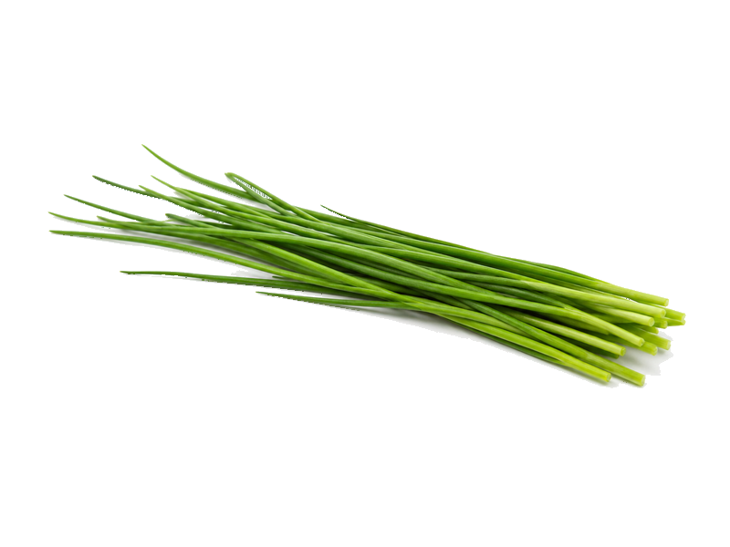

Warzywa
Szczypiorek
Szczypiorek: 1.8 g białka, 32 kcal, 4.4 g węglowodanów i 0.7 g tłuszczu na 100 g. Kategoria: Warzywa.
Kalorie32 kcalna 100 g
Białko / proteiny1.8 g
Węglowodany4.4 g
Tłuszcz0.7 g
Cena (szac.)~0,97 złza 100 g
Ceny zaktualizowano: maj 2026 (szacunek — ceny w popularnych supermarketach)
Porcja: garść (30g)
| Kalorie | 10 kcal |
|---|---|
| Białko | 0.5 g |
| Węglowodany | 1.3 g |
| Tłuszcz | 0.2 g |
| Cena (szac.) | ~0,29 zł |
Szczegółowe składniki odżywcze na 100 g
| Wartość energetyczna (kalorie) | 32 kcal |
|---|---|
| Białko (proteiny) | 1.8 g |
| Węglowodany | 4.4 g |
| Tłuszcz | 0.7 g |
| Tłuszcze nasycone | 0.1 g |
| Tłuszcze nienasycone | 0.6 g |
| Witaminy i minerały | Witamina K, Witamina C, Kwas foliowy |
| Współczynnik kcal / 1 g białka | 17.8 |
| Cena produktu (szac. za 100 g) | ~0,97 zł |
| Cena za 100 g białka (szac.) | ~53,70 zł |